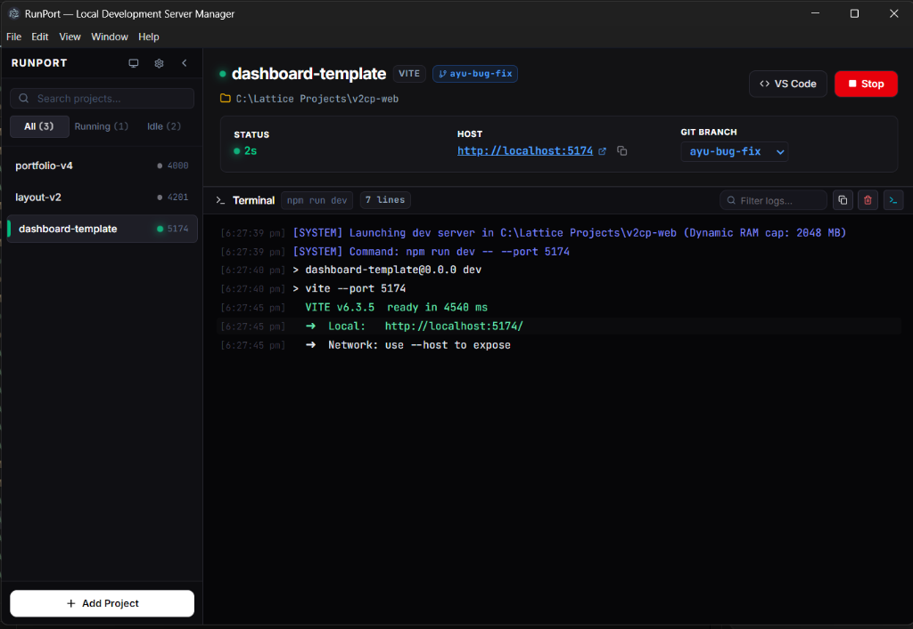

Auto-Detection
Point RunPort at a project folder. It reads your package.json, detects your framework (Next.js, Vite, Angular, NestJS…), and pre-fills the start command. Zero manual config.

Point RunPort at a project folder. It reads your package.json, detects your framework (Next.js, Vite, Angular, NestJS…), and pre-fills the start command. Zero manual config.
A compact, always-on-top widget floats above your code editor. Start or stop any server with one click — without switching away from what you're working on.
When a port is occupied, RunPort tells you exactly which process is using it. Kill it with one click, or let RunPort automatically pick the next free port.
Watch server output in real time — startup messages, build errors, request logs. Batched at 50 ms intervals for smooth display even under high-velocity output.
See your active Git branch and how long each server has been running at a glance. No more switching to a terminal just to check git branch.
Minimize RunPort to the system tray and keep your taskbar clean. Right-click the tray icon for Start All / Stop All — no window needed.
📁 C:\Lattice Projects\v2cp-web
Try clicking different projects in the sidebar, clicking Stop / Start, typing into Filter logs, or clicking Copy.
Managing 5 client projects at once. With RunPort, you switch contexts instantly — no terminal archaeology to find which server is which.
Running a React frontend, a Node API, and a background worker simultaneously. RunPort keeps all three visible and controllable from one window.
Onboarding a new developer? Send them a list of RunPort projects. They're up and running with no "which command do I use?" questions.
11
Frameworks auto-detected
0
Terminals needed
50ms
IPC log batch interval
100%
MVP spec delivered
# Clone
git clone https://github.com/Ayush-Antiwal/RunPort.git && cd RunPort
# Install
npm install
# Dev mode (hot reload)
npm run dev
# Build Windows installer
npm run dist